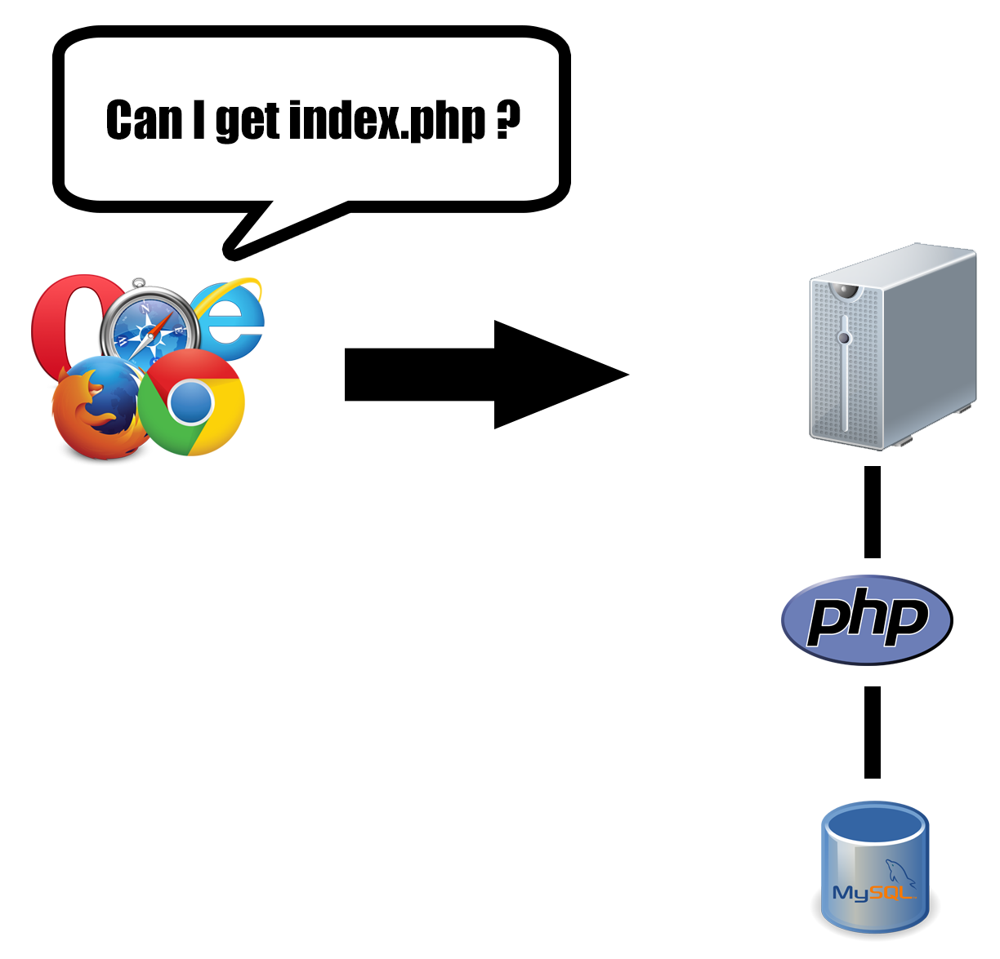
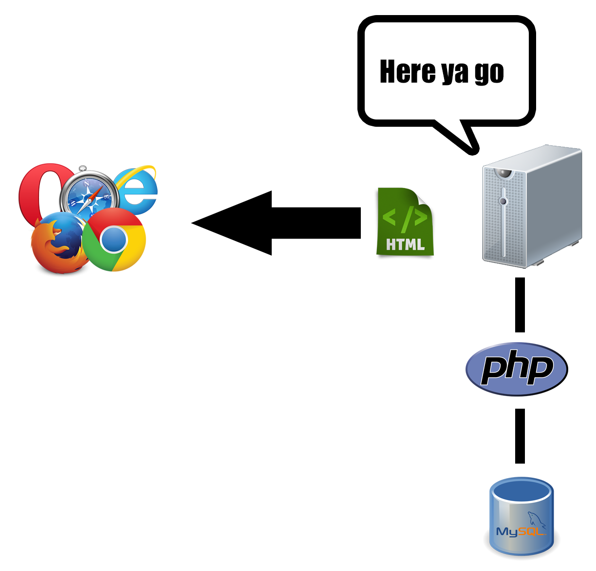
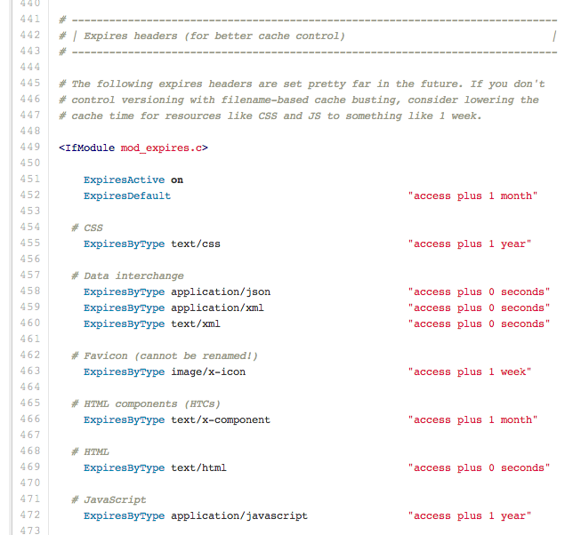
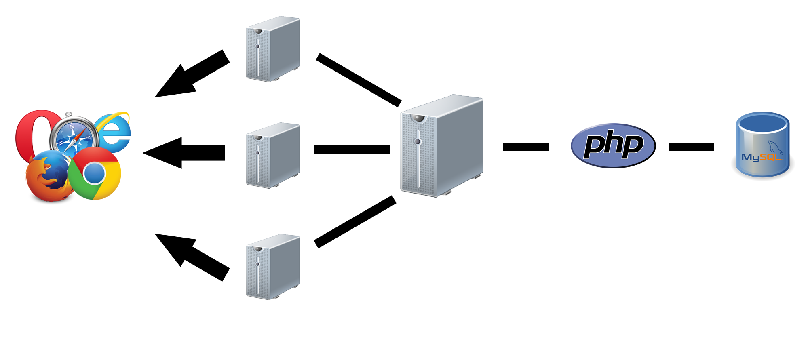
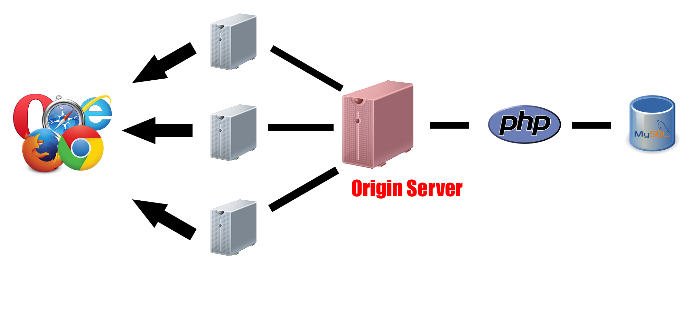
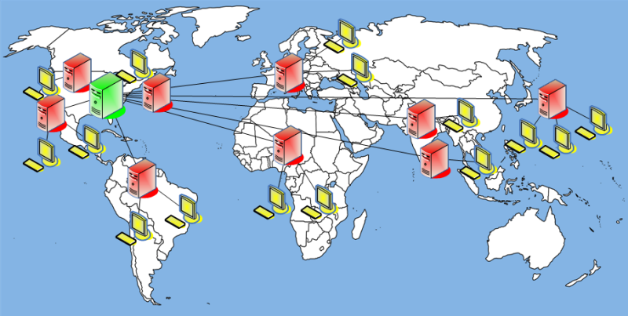

Cache Rules Everything Around Me
presented at
Hi, I'm Russell Heimlich
(Heimlich, like the maneuver)
Head Cache Invalidator at the Pew Research Center
Follow Along
But first a story…
2006 - 2009 I worked at USNews & World Report
Months of work go in to the release of new rankings.
On launch day we always see a huge traffic spike
But one year we got lucky…
The marketing/biz dev team managed to get us featured on the homepage of a major web portal!
(And by featured I mean the featured story on their homepage)
We were going to be featured on…
(Before their CEO discovered Adobe Illustrator)
We Were EXCITED!
Ok maybe we looked more like this…
The story went live on Yahoo.com and we watched…
The servers started getting slower…
Editors were calling us saying they couldn't get in to the admin area…

Our servers were completely down…
We had to call Yahoo! and have them remove the story because we couldn't handle the traffic…
We lasted 15 minutes.
Performance and uptime are important!
And caching can help.
P.S. Don't feel bad for USNews
What is caching?
Cache
“a component that transparently stores data so that future requests for that data can be served faster.”
A cache may contain values computed earlier or duplicate values stored elsewhere.
A cache hit can complete the request by reading the value from the cache.
A cache miss has to be recomputed or fetched from another location which is much slower.
The more requests that can be served from a cache, the faster the system performs.
The faster the system, the more requests it can handle.
A Real-World Example
You're taking 5 classes and need to write 5 essays…
You could write 5 separate essays
OR
You could write one essay and use it for all of your classes
That's caching!
There are many (potential) layers of caching involved in a single web request.
How does a request work?
A Basic Request
A Basic Request
PHP Pages Take Longer to Serve
A PHP Page Request
A PHP Page Request
A PHP Page with MySQL Data Takes Even More Work
A PHP/MySQL Page Request
A PHP/MySQL Page Request
We want to minimize the amount of work done by our server, PHP and MySQL
HTTP Headers
“The easiest request to serve is the one never sent at all.”
I just made this quote up.
Your logo image isn't going to change when going from your homepage to a single blog post…
So why make the browser even request it?
Far Future Expires Header
- Tell the browser how long the copy of the file is valid
- Cached files that are valid are not re-downloaded from the server
What does that look like?
Add this to your .htaccess file:
ExpiresActive on
ExpiresDefault "access plus 1 month"
ExpiresByType image/gif "access plus 1 month"
ExpiresByType image/jpeg "access plus 1 month"
ExpiresByType image/png "access plus 1 month"
The HTML5 Boiler Plate project's .htaccess file
But what if the image/JS/CSS file changes?
The browser will keep loading the resource from it's local cache
And then you have to clear the browser cache or hard refresh the page (Shift + Refresh).
>We need cache-busting filenames!
WordPress' wp_enqeue_script() and wp_enqueue_style() supports this
wp_enqueue_script( $handle, $src, $deps, $ver, $in_footer );
wp_enqueue_style( $handle, $src, $deps, $ver, $media );
which outputs a script like this
my-super-neato-script.js?ver=3.6.1
my-trendy-styles.css?ver=3.6.1
But then every time you update your JavaScript or CSS you need to change the $ver variable to bust the cache…

So I Wrote a plugin
CDN Friendly CSS and JS URLs in WordPress
/theme/css/2013-09-12_5:21/my-style.css
maps to
/theme/css/my-style.css
CDNs
Content Delivery Networks (CDNs)
Set of servers in multiple data centers around the world to serve content with high availability and performance.
CDNs serve their copy of a file, if available, sparing your server from the traffic.

If the CDN doesn't have a copy of the file, it passes the request back to the origin.
Two Types of CDNs
- Push - assets get uploaded to the CDN manually, you link directly to it
- Pull - The CDN is a proxy saving requests that are passed through it
DNS Changes Needed For Pull CDNs
cdn.example.com masks ugly CDN URL (CNAME)
DNS Changes Needed For Pull CDNs
example.com points to origin IP Address (A Record)
The CDN uses the Expires header to determine if cached asset is stale or not.
Stale requests get passed to the origin server
Some CDNs and proxies don't cache URLs with a query string. So avoid it if you can.
BAD
http://www.example.com/js/file.js?2013-09-12
GOOD
http://www.example.com/js/2013-09-12/file.js
http://www.example.com/js/file.2013-09-12.js
If you cache your HTML via a CDN then if your origin server goes down your site will still be served. Visitors won't even know.
Distributing content across the world, visitors will download from a server closer to them.
CDN Providers
Full Page Caching
Full page caching takes the result of a page request from WordPress and saves it as a static HTML file that will be served up the next time.
This reduces the load on PHP and MySQL
Caching Plugins
- W3 Total Cache (Advandced, lots of options)
- WP Super Cache (Easier set-up)
- Batcache (Multi-server environment)
- Hyper Cache (For low-resource hosts)
Caching Plugin Tips
- Don't cache pages for logged in users
- Don't cache POST requests
- Do serve cached files from
mod_rewrite(not PHP) - Don't serve a separate mobile version (use responsive design)
- Make sure it is working!
PHP Caching
WordPress' Caching APIs
- Transients API
- WP Object Cache
Transients API
- Used to store data that can expire at any time
- Has an expiration to invalidate the data
- Uses the wp_options table or an object cache
Transients API Functions
Multisite Transients API Functions
Transients Example
$my_transient = get_transient( 'my_transient' );
if( $my_transient == false ) {
//Do some complicated task worth caching
$my_transient = 'Something complicated';
set_transient( 'my_transient', $my_transient, 12 * HOUR_IN_SECONDS );
}
Time Constants
As of WordPress 3.5 several constants were introduced to easily express time
MINUTE_IN_SECONDS = 60 (seconds)
HOUR_IN_SECONDS = 60 * MINUTE_IN_SECONDS
DAY_IN_SECONDS = 24 * HOUR_IN_SECONDS
WEEK_IN_SECONDS = 7 * DAY_IN_SECONDS
YEAR_IN_SECONDS = 365 * DAY_IN_SECONDS
Transients API Is Ideal For…
- Fetching RSS feeds
- Storing an external API call
- Caching a complex query
- ANYTHING that needs to expire at some time
WP Object Cache
WordPress' internal class for caching data.
See http://codex.wordpress.org/Class_Reference/WP_Object_Cache
Caching Persistance
WP_Object_Cache data isn't saved between page requests by default.
If an object cache is available, WP_Object_Cache will use that instead
wp_cache Functions
Don't call WP_Object_Cache Class directly!
wp_cache_add( $key, $data, $group, $expire );
wp_cache_set( $key, $data, $group, $expire );
wp_cache_get( $key, $group = '', $force = false, $found = null );
wp_cache_delete( $key, $group );
wp_cache_replace( $key, $data, $group, $expire )
When Should We Use This?
Object Caching
What is Object Caching?
Distributed, in-memory key-value store for small chunks of data.
Uh… in English?
- Store Transients API and WP Object Cache items in memory between requests
- Make it available to multiple servers
- RAM is way faster than disk!
How Do I Enable Objet Caching?
Opcode Caching
What does Opcode Caching do?
- PHP is written in a human-readable syntax
- When run, PHP is compiled to opcode that a computer understands
- An opcode cache speeds up the execution of PHP
Opcode Caches
Which Opcode Cache to Use?
Zend Optimizer+ will be bundled with PHP 5.5
Benchmarks
| PHP (No Opcode Cache) | ~40 | |
| APC | ~260 | |
| Zend Optimizer + | ~307 |
See http://www.ricardclau.com/2013/03/apc-vs-zend-optimizer-benchmarks-with-symfony2/
MYSQL Caching
MySQL's Query Cache
- Cache's result for frequently used
SELECTstatements - Any
INSERT,UPDATE, orDELETEstatement flushes the query cache
To Summarize
- Leverage browser caching via HTTP headers
- Use a CDN if you can or a full-page caching plugin
- WordPress' caching APIs are helpful
- Set-up object caching on your server
- Utilize an opcode cache to speed up PHP
- Make sure MySQL's
query_cacheis turned on
More Reading
- Core Caching Concepts in WordPress by Zack Tollman
- Scaling WordPress by Joseph Scott
- WordPress Fragment Caching Revisited by Ryan Burnette
- Caching by WordPress.com VIP
- Caching, Scaling, and What I've Learned Programming for WordPress.com VIP by Erick Hitter
- WordPress + Memcached by Scott Taylor